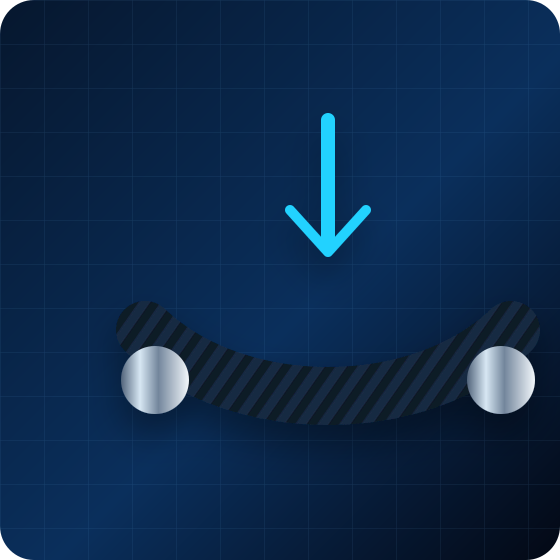
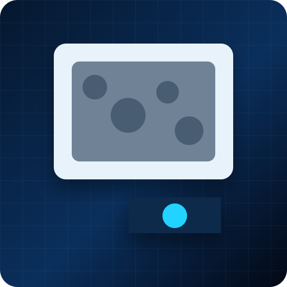

인장시험
ASTM D3039, ASTM E8/E8M 등 재료별 인장강도, 탄성계수, 변형률 평가
인장, 압축, 전단, 굽힘, ILSS, 고온/저온 환경 시험과 현미경 기반 파손 분석을 목적에 맞게 구성합니다.

시편 형상, 적층 방향, 시험 속도, 치구 조건을 확인하여 적합한 시험 항목을 선정합니다.
ASTM D3039, ASTM E8/E8M 등 재료별 인장강도, 탄성계수, 변형률 평가
ASTM D6641, D3410 기반 복합재 압축 특성 및 파손양상 확인
Isotropic, V-notched shear test 등 전단강도 및 전단탄성계수 평가

ASTM D790 및 D2344 기반 굽힘강도, 층간전단강도 평가
온도 조건별 강도·강성 변화, 고온/저온 환경에서의 인장 및 파손 특성 검토

파단면, 층간분리, 기공, 계면 손상 등 파손 양상 이미지 정리
아래 규격은 대표 예시이며, 실제 적용 규격은 소재·시편·장비 조건 및 고객 요구사항 확인 후 협의합니다.
| 구분 | 대표 규격 | 주요 평가 내용 |
|---|---|---|
| 복합재 인장 | ASTM D3039 / D3039M | 인장강도, 인장탄성계수, 파단 변형률 |
| 복합재 압축 | ASTM D6641, ASTM D3410 | 압축강도, 압축탄성계수, 좌굴 및 파손 양상 |
| 복합재 전단 | ASTM D5379, ASTM D7078 | 전단강도, 전단탄성계수, V-notch 영역 파손 |
| 굽힘·층간전단 | ASTM D790, ASTM D2344 | 굽힘강도, 굽힘탄성계수, ILSS |
| 금속/고온 인장 | ASTM E8/E8M, ASTM E21 | 상온 및 고온/저온 환경 조건 인장 특성 |